Figure 2-21 - Diagramme de classes
Dans ce chapitre d'analyse des exigences fonctionnelles et de conception, nous aborderons plusieurs elements essentiels pour la comprehension et la definition des besoins du systeme Test Management Platform. Nous commencerons par le recueil des besoins fonctionnels, qui englobe les fonctionnalites specifiques que le systeme doit offrir pour repondre aux attentes des utilisateurs. Ensuite, nous nous pencherons sur le recueil des besoins non fonctionnels, qui concernent les contraintes techniques et les performances du systeme.
Nous explorerons egalement l'identification des parties prenantes, en mettant l'accent sur l'identification des acteurs et leurs roles et responsabilites. Enfin, nous aborderons les user stories, les diagrammes de cas d'utilisation (Use Case Diagrams), les diagrammes de sequence, le diagramme de classes et les diagrammes complementaires (activite, etats-transitions, composants, deploiement) pour obtenir une vue globale et claire des exigences fonctionnelles et de la conception du systeme.
Dans cette section dediee au recueil des besoins fonctionnels, nous examinerons en detail les besoins identifies pour notre projet Test Management Platform en tenant compte des problemes et defis auxquels nos utilisateurs potentiels sont confrontes. Nous chercherons a mettre en place des solutions adaptees pour repondre a ces besoins. Bases sur la problematique et les solutions proposees dans le chapitre precedent, voici les principaux besoins fonctionnels que nous avons determines :
Des entretiens ont ete menes avec les responsables du departement qualite logicielle et les futurs utilisateurs de la plateforme, afin de recueillir leurs attentes et contraintes. Un benchmark des solutions existantes (TestRail, Zephyr, qTest) a permis de comparer les pratiques du marche et de reperer les points d'amelioration. Ces differentes approches ont abouti a un ensemble coherent de besoins fonctionnels, en adequation avec les objectifs du projet et les attentes des utilisateurs finaux.
Dans cette section dediee au recueil des besoins non fonctionnels, nous presentons les exigences qui, bien que ne concernant pas directement les fonctionnalites, jouent un role essentiel dans la qualite globale de la plateforme Test Management Platform. Ces besoins garantissent la securite, la fiabilite et une experience utilisateur optimale.
Voici les besoins non fonctionnels identifies pour notre projet :
Les acteurs principaux du systeme Test Management Platform sont :
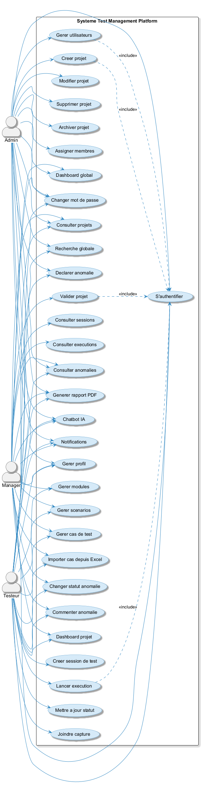
Voir Tableau 2-1 : ce tableau presente les roles et responsabilites de chaque acteur de la plateforme.
| Acteur | Role | Responsabilites |
|---|---|---|
| Admin | Administrateur de la plateforme |
- Gerer les comptes utilisateurs (creation, modification, activation, desactivation, suppression). - Creer, modifier, supprimer et archiver les projets. - Assigner et retirer des membres aux projets. - Declarer et supprimer des anomalies. - Consulter le dashboard global et les KPIs globaux. - Acceder aux archives des projets. - Generer des rapports PDF. - Utiliser le chatbot IA et la recherche globale. |
| Manager | Responsable qualite / Chef de projet test |
- Valider les projets apres verification des resultats de test. - Gerer les modules, scenarios et cas de test (creation, modification, suppression). - Importer des cas de test depuis un fichier Excel. - Consulter les sessions de test et les executions (lecture seule). - Changer le statut des anomalies et ajouter des commentaires. - Consulter le dashboard global et par projet. - Generer des rapports PDF. |
| Testeur | Ingenieur de test / QA |
- Gerer les modules, scenarios et cas de test (creation, modification, suppression). - Importer des cas de test depuis Excel ou les generer avec l'IA. - Creer et gerer les sessions de test (campagnes). - Lancer les executions, mettre a jour le statut et joindre des captures d'ecran. - Declarer des anomalies avec suggestion de gravite par IA. - Consulter le dashboard par projet. - Utiliser le chatbot IA. |
Nous decrivons ci-dessous les fonctionnalites de la plateforme Test Management Platform sous forme de User Stories, en decrivant pour chaque acteur les actions qu'il peut effectuer.
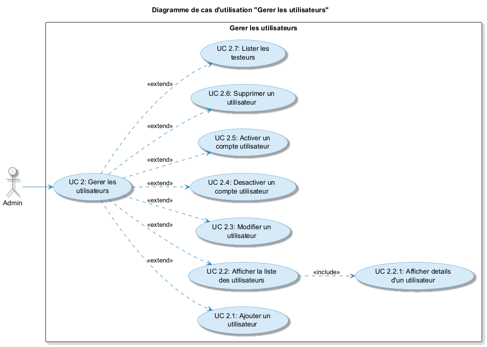
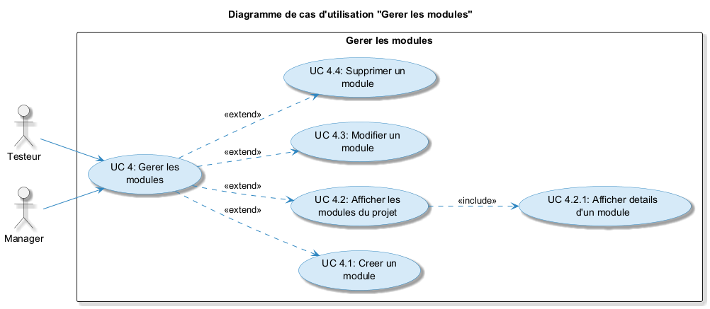
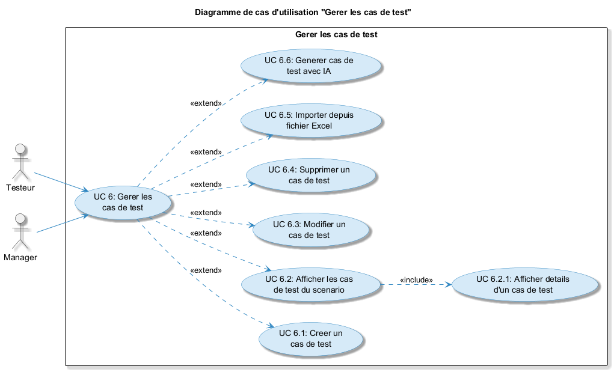
Le langage UML (Unified Modeling Language, ou langage de modelisation unifie) a ete pense pour etre un langage de modelisation visuelle commun, riche semantiquement et syntaxiquement, destine a l'architecture, la conception et l'implementation de systemes logiciels complexes par leur structure aussi bien que leur comportement. L'UML a des applications qui vont au-dela du developpement logiciel, notamment pour les flux de processus dans l'industrie.
Il ressemble aux plans utilises dans d'autres domaines et se compose de differents types de diagrammes. Dans l'ensemble, les diagrammes UML decrivent la limite, la structure et le comportement du systeme et des objets qui s'y trouvent.
L'UML n'est pas un langage de programmation, mais il existe des outils qui peuvent etre utilises pour generer du code en plusieurs langages a partir de diagrammes UML. L'UML a une relation directe avec l'analyse et la conception orientees objet.
Les differents elements representables sont :
En langage de modelisation unifie (UML), un diagramme de cas d'utilisation peut servir a resumer les informations des utilisateurs de votre systeme (egalement appeles acteurs) et leurs interactions avec ce dernier. La creation de ce type de diagramme UML requiert un ensemble de symboles et de connecteurs specifiques.
Ce cas d'utilisation (Figure 2-5) concerne la gestion du profil par l'ensemble des acteurs du systeme. Chaque utilisateur connecte (Admin, Manager ou Testeur) peut acceder a son profil personnel pour consulter ses informations, les modifier ou changer son mot de passe. Ces trois sous-cas sont lies au cas principal par des relations «extend», car ils sont optionnels et declenches par choix de l'utilisateur.
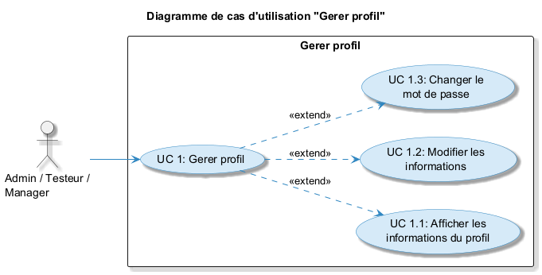
Ce cas d'utilisation (Figure 2-6) concerne la gestion des comptes utilisateurs, une fonctionnalite reservee exclusivement a l'Admin. L'application permet a l'administrateur connecte d'effectuer les operations suivantes : ajouter un nouvel utilisateur, lister tous les utilisateurs, modifier les informations d'un compte, desactiver ou activer un compte, supprimer definitivement un utilisateur, et lister les testeurs disponibles pour l'assignation aux projets.
Ce cas d'utilisation (Figure 2-7) concerne la gestion des projets. L'Admin peut creer, modifier, supprimer et archiver des projets, ainsi qu'assigner ou retirer des membres. Le Manager peut uniquement consulter les projets et les valider apres verification des resultats de test. Le Testeur ne peut que consulter les projets auxquels il est assigne.
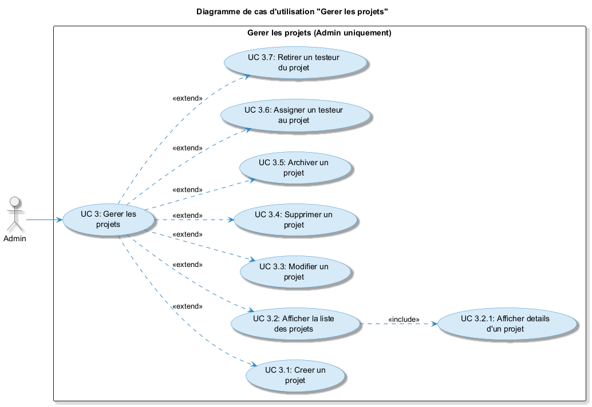
Ce cas d'utilisation (Figure 2-8) concerne la gestion des modules au sein d'un projet. Un module represente une composante fonctionnelle du projet a tester (par exemple : "Module Authentification", "Module Paiement"). L'application permet au Testeur et au Manager de creer, consulter, modifier et supprimer des modules. L'Admin n'intervient pas dans cette gestion operationnelle.
Ce cas d'utilisation (Figure 2-9) concerne la gestion des scenarios de test au sein de chaque module. Un scenario represente un parcours fonctionnel a tester. Comme pour les modules, le Testeur et le Manager partagent les memes permissions : creation, consultation, modification et suppression des scenarios. La consultation inclut l'affichage des details d'un scenario specifique.
Ce cas d'utilisation (Figure 2-10) concerne la gestion des cas de test, l'element central du processus. Chaque cas de test decrit une procedure precise a executer avec des donnees d'entree, des etapes et un resultat attendu. Le Testeur et le Manager peuvent creer, consulter, modifier et supprimer des cas de test. Deux fonctionnalites additionnelles sont disponibles : l'import en masse depuis un fichier Excel (.xlsx) via Apache POI, et la generation automatique par intelligence artificielle via Ollama.
Ce cas d'utilisation (Figure 2-11) concerne la gestion des sessions de test. Une session regroupe un ensemble d'executions dans un contexte temporel defini, comme une campagne de test pour un sprint. Le Testeur peut creer, modifier et cloturer des sessions. La cloture declenche automatiquement la generation d'un resume IA avec recommandation go/no-go. Le Manager dispose d'un acces en lecture seule pour consulter les sessions et leurs details.
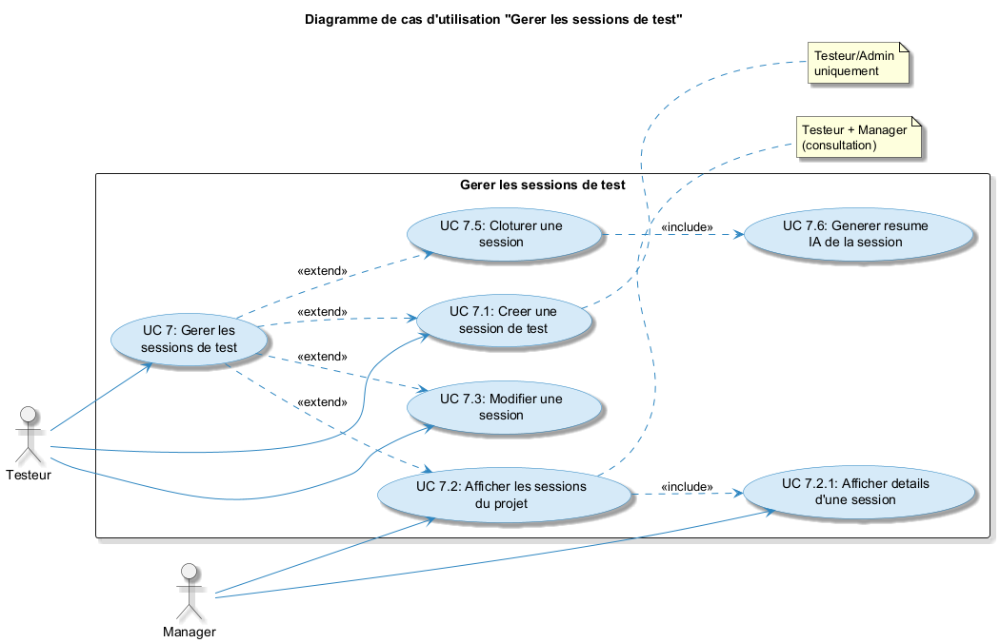
Ce cas d'utilisation (Figure 2-12) concerne la gestion des executions de test. Le Testeur lance l'execution d'un cas de test dans le cadre d'une session, met a jour le statut (SUCCESS, FAILED ou BLOCKED) et peut joindre une capture d'ecran comme preuve via Cloudinary. Le Manager ne dispose que d'un acces en consultation aux executions, sans pouvoir en creer ni en modifier.
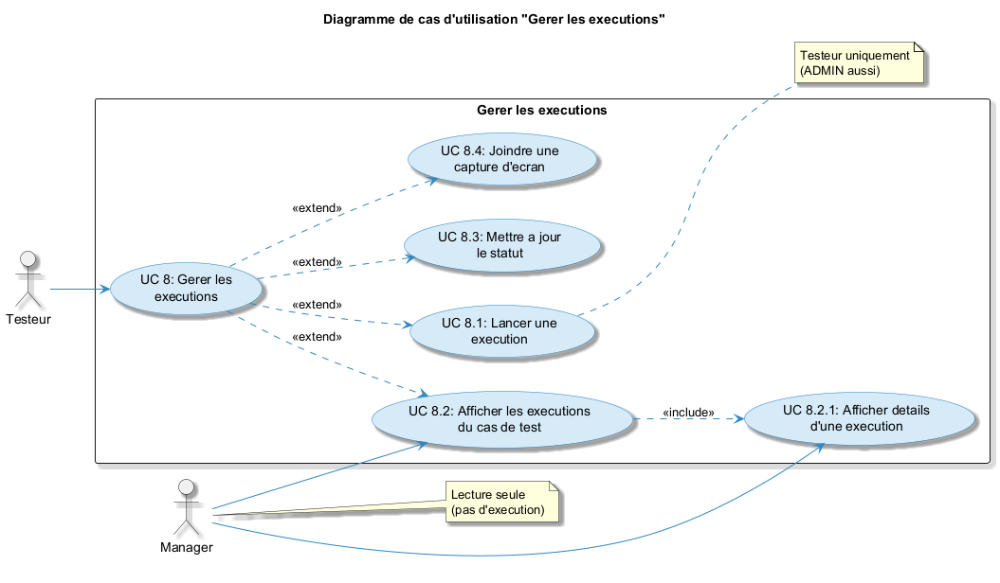
Ce cas d'utilisation (Figure 2-13) concerne la gestion des anomalies, un module ou chaque role a des permissions distinctes. Le Testeur et l'Admin peuvent declarer des anomalies. La declaration inclut automatiquement une suggestion de gravite par l'IA («include»). Le Manager ne peut que consulter les anomalies, changer leur statut et ajouter des commentaires. La suppression d'une anomalie est reservee exclusivement a l'Admin.
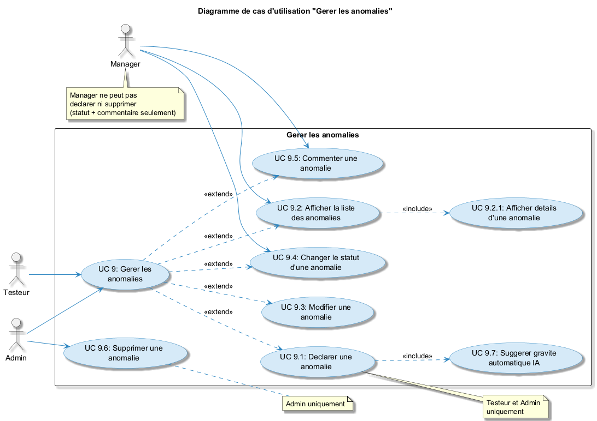
Ce cas d'utilisation (Figure 2-14) concerne le tableau de bord et les rapports. L'Admin et le Manager accedent au dashboard global et aux KPIs globaux. Le Testeur n'a acces qu'aux KPIs des projets auxquels il est assigne. L'Admin dispose en plus de l'acces exclusif aux archives. Tous les roles peuvent generer des rapports PDF et utiliser la recherche.
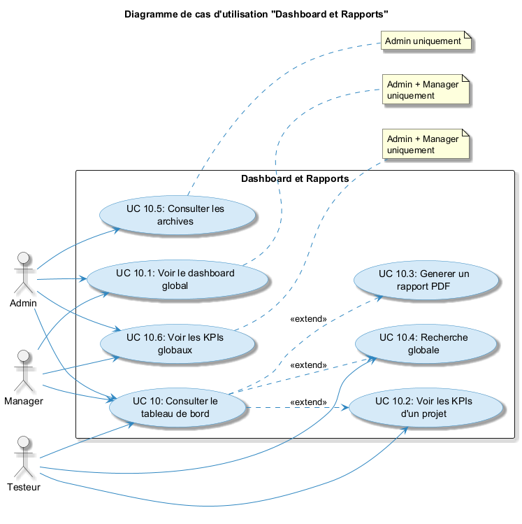
Ce cas d'utilisation (Figure 2-15) concerne les fonctionnalites d'intelligence artificielle integrees a la plateforme via Ollama (modele deepseek-r1:7b). Tous les acteurs peuvent generer des cas de test automatiquement, obtenir un resume intelligent de session, recevoir des suggestions de gravite d'anomalie et interroger le chatbot IA. Chaque fonctionnalite inclut obligatoirement une verification de la disponibilite du serveur LLM («include»).
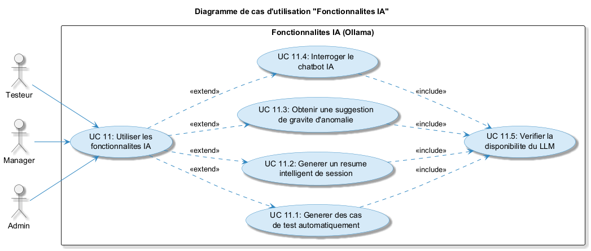
Un diagramme de sequence est un type de diagramme d'interaction, car il decrit comment et dans quel ordre plusieurs objets fonctionnent ensemble. Ces diagrammes sont utilises a la fois par les developpeurs logiciels et les managers d'entreprises pour analyser les besoins d'un nouveau systeme ou documenter un processus existant. Les diagrammes de sequence sont parfois appeles diagrammes d'evenements ou scenarios d'evenements.
Dans cette partie dediee a la realisation des diagrammes de sequences, nous allons explorer en profondeur cet outil essentiel de l'ingenierie logicielle.
Cette Figure 2-16 represente le processus d'authentification d'un utilisateur. L'acteur saisit son nom d'utilisateur et son mot de passe dans le formulaire de connexion. Le frontend envoie une requete POST a /api/auth/login. Le AuthController delegue au AuthService qui verifie les identifiants en base de donnees via BCrypt. En cas de succes, un token JWT valable 24h est genere par le JwtService et renvoye au frontend, qui le stocke dans le localStorage et redirige vers le dashboard. En cas d'echec, une erreur 401 Unauthorized est retournee.
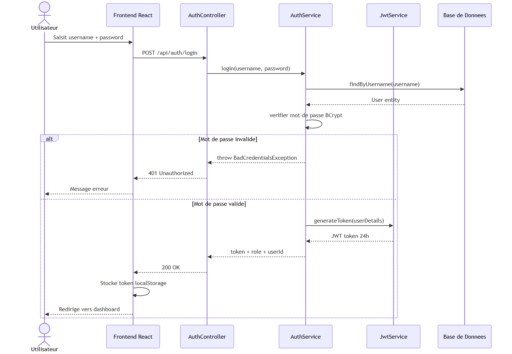
Cette Figure 2-17 represente le flux complet d'un cycle de test. Le testeur cree une session de test (statut OUVERTE), lance l'execution d'un cas de test (statut PENDING), met a jour le statut apres execution (ici FAILED), puis declare une anomalie critique. Le systeme enregistre l'anomalie avec le statut OUVERTE et declenche automatiquement des notifications aux Admin et Manager via le NotificationService.
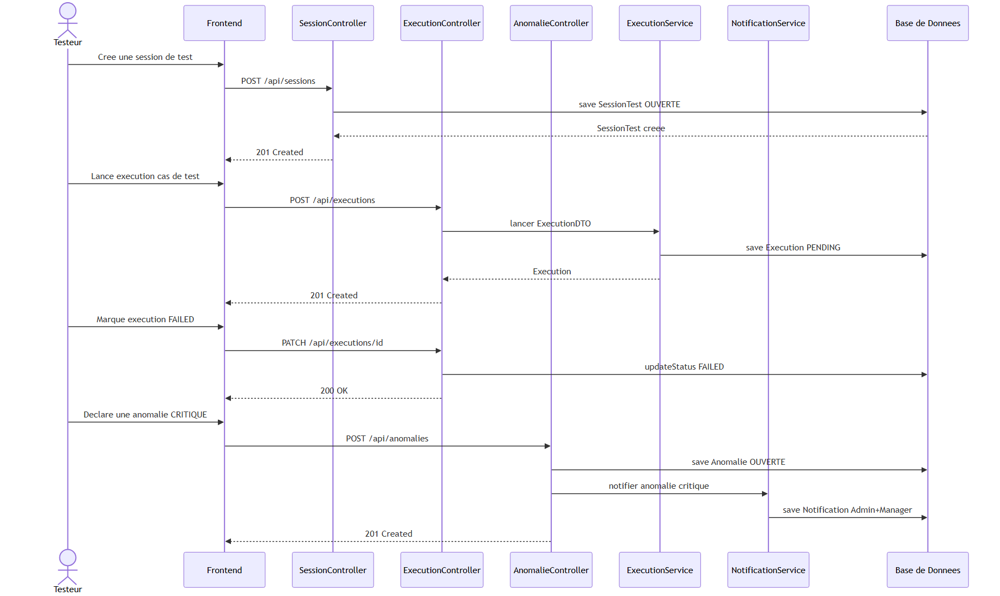
Cette Figure 2-18 represente le processus de generation automatique de cas de test via l'intelligence artificielle. Le testeur saisit une description fonctionnelle et le nombre de cas souhaite. Le AiCasTestService recupere le contexte du scenario, construit un prompt et l'envoie au serveur Ollama. Le LLM renvoie une reponse JSON structuree. Le service parse la reponse et sauvegarde chaque cas de test en base de donnees avec le flag genereParIA=true.
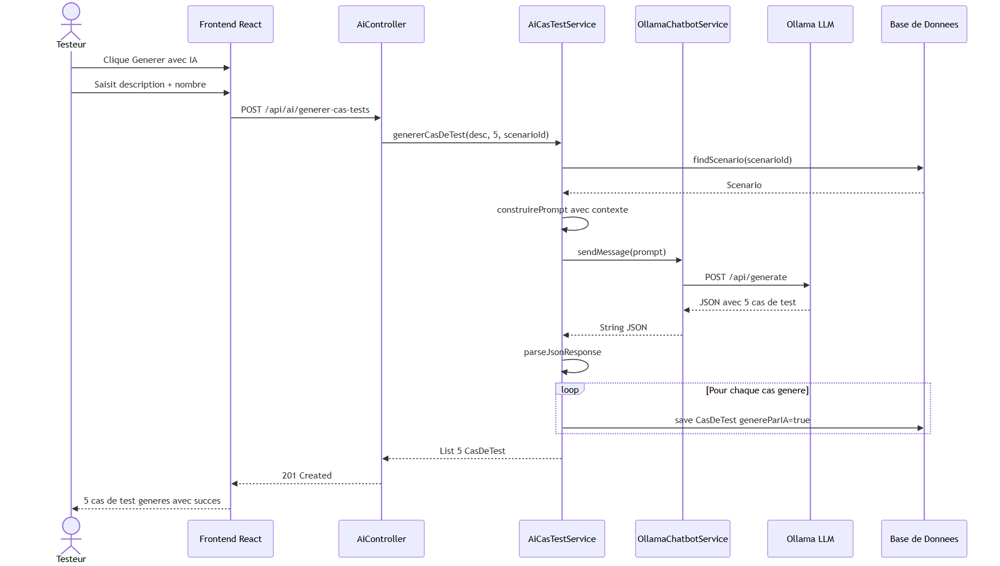
Cette Figure 2-19 represente le processus de generation automatique d'un resume de session lors de sa cloture. Le SessionTestService recupere toutes les executions et anomalies de la session. Le SessionSummaryService calcule les statistiques (taux de succes, anomalies par gravite) et envoie un prompt au LLM. Ollama genere un resume en francais avec une recommandation go/no-go. Le resume est sauvegarde et le statut de la session passe a CLOTUREE.
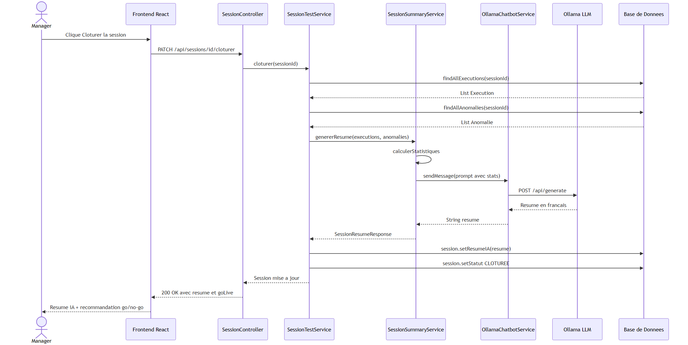
Cette Figure 2-20 represente le processus de suggestion automatique de gravite d'une anomalie. Lors de la saisie du titre et de la description, apres un debounce de 800ms, le frontend envoie une requete au AnomalieGraviteService. Celui-ci envoie un prompt au LLM qui analyse le contenu et renvoie une suggestion (par exemple "CRITIQUE - perte de donnees") avec un indice de confiance (92%). Le testeur peut accepter ou modifier la suggestion avant de soumettre le formulaire.
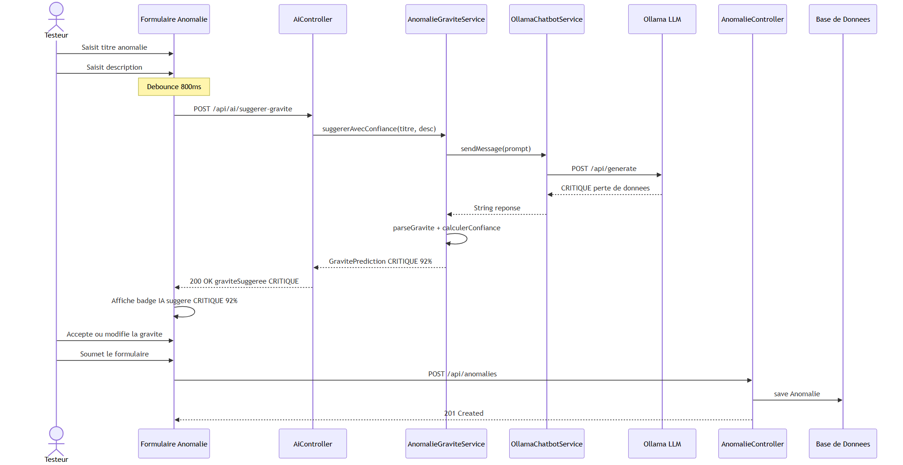
Le diagramme de classes est l'un des diagrammes les plus populaires en langage UML. Tres utilise par les ingenieurs logiciels pour documenter l'architecture de leurs logiciels, les diagrammes de classes sont un type de diagramme de structure, car ils decrivent ce qui doit etre present dans le systeme modelise. La forme de la classe se compose d'un rectangle a trois lignes. La ligne superieure contient le nom de la classe, celle du milieu affiche les attributs et la ligne inferieure exprime les methodes ou operations.
La vue statique de l'application comprend differents composants qui interagissent pour fournir les fonctionnalites attendues. En utilisant le langage UML, nous avons modelise les donnees et structures de donnees necessaires. Le diagramme de classes illustre les relations entre les differentes entites telles que les utilisateurs, les projets, les modules, les scenarios, les cas de test, les executions, les anomalies et les sessions de test.
Voir Tableau 2-2 : ce tableau presente la description de chaque classe utilisee dans le diagramme de classes.
| Classe | Description | Attributs principaux |
|---|---|---|
| Utilisateur (User) | Classe mere representant un utilisateur du systeme. Heritee par Admin, Manager et Testeur via la strategie SINGLE_TABLE. | id, username, email, password, nom, prenom, role, actif, dateCreation |
| Admin | Specialisation de Utilisateur avec le role ADMIN. Gere les utilisateurs, les projets et les archives. | Herite de Utilisateur |
| Manager | Specialisation de Utilisateur avec le role MANAGER. Valide les projets et supervise le processus de test. | Herite de Utilisateur |
| Testeur | Specialisation de Utilisateur avec le role TESTEUR. Execute les tests et declare les anomalies. | Herite de Utilisateur |
| Projet | Represente un projet de test logiciel. Contient des modules et est associe a des membres. | id, nom, description, dateDebut, dateFin, statut (EN_COURS, TERMINE, VALIDE, ARCHIVE) |
| ModuleProjet | Represente un module fonctionnel au sein d'un projet (ex: Module Authentification). | id, nom, description, projet |
| Scenario | Represente un parcours fonctionnel a tester au sein d'un module. | id, titre, description, module |
| CasDeTest | Decrit une procedure precise de test avec donnees d'entree, etapes et resultat attendu. | id, titre, description, etapes, donneesEntree, resultatAttendu, genereParIA, scenario |
| SessionTest | Represente une campagne de test regroupant des executions dans un contexte temporel. | id, nom, dateCreation, statut (OUVERTE, CLOTUREE), commentaire, projet, testeur |
| Execution | Represente l'execution concrete d'un cas de test dans une session. | id, dateExecution, statut (PENDING, SUCCESS, FAILED, BLOCKED), captureUrl, casDeTest, sessionTest |
| Anomalie | Represente un defaut detecte lors d'une execution echouee. | id, titre, description, gravite (FAIBLE, MOYENNE, CRITIQUE), statut (OUVERTE, EN_COURS, CORRIGEE, FERMEE), execution |
| Commentaire | Commentaire attache a une anomalie pour le suivi collaboratif. | id, contenu, dateCreation, utilisateur, anomalie |
| Notification | Alerte envoyee automatiquement a un utilisateur (ex: anomalie critique). | id, message, dateCreation, lue, utilisateur |
Dans cette partie, nous presentons le diagramme de classes specifique a la vue statique de notre application Test Management Platform. Ce diagramme offre une representation visuelle des classes et de leurs relations. La hierarchie d'heritage (Utilisateur → Admin/Manager/Testeur) est implementee via la strategie JPA SINGLE_TABLE. Les multiplicites indiquent les cardinalites des associations (1..*, 0..*, 0..1).
Les interactions et le flux de donnees sont bases sur les changements d'etat des composants et la communication entre eux :
Le diagramme d'activite modelise le flux de travail global du processus de gestion de test, depuis la creation d'un projet jusqu'a son archivage. Il met en evidence les points de decision et les chemins alternatifs. Le processus se deroule en sept phases : initialisation du projet par l'Admin, preparation des cas de test (saisie manuelle, import Excel ou generation IA), assignation des membres, execution des tests par le Testeur, gestion des anomalies avec notifications automatiques, bilan avec resume IA, et enfin validation par le Manager suivie de l'archivage.
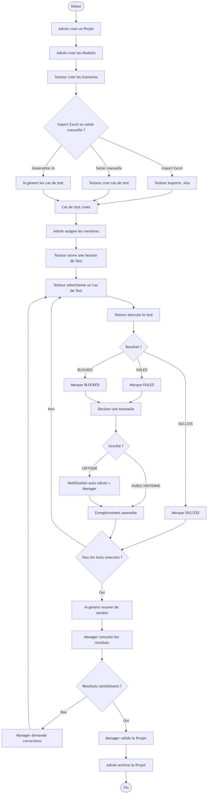
Les diagrammes d'etats-transitions modelisent les differents etats possibles d'une entite et les evenements qui provoquent les transitions entre ces etats.
Cette Figure 2-23 represente le cycle de vie d'un projet. Un projet est cree par l'Admin avec le statut EN_COURS, puis passe a TERMINE lorsque les tests sont executes. Le Manager peut le valider (statut VALIDE) ou le refuser (retour a EN_COURS). L'Admin peut archiver le projet a tout moment (statut ARCHIVE, etat terminal).
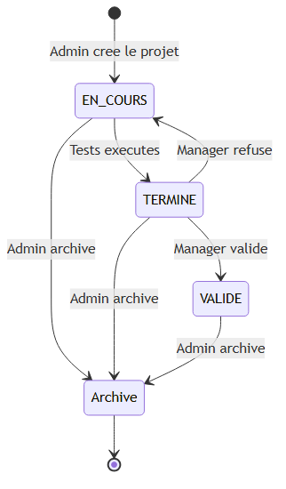
Cette Figure 2-24 represente le cycle de vie d'une anomalie. Elle est declaree avec le statut OUVERTE, passe a EN_COURS lors de la prise en charge, puis a CORRIGEE apres correction. Le Manager valide la correction (FERMEE) ou la renvoie (retour a EN_COURS). Un faux positif peut etre ferme directement.
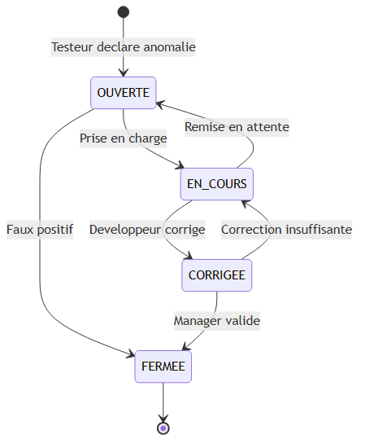
Cette Figure 2-25 represente le cycle de vie d'une execution. Elle demarre avec le statut PENDING, puis passe a SUCCESS, FAILED ou BLOCKED. Des transitions bidirectionnelles sont possibles entre SUCCESS et FAILED (re-execution). Un test BLOCKED peut revenir a PENDING lorsque le prerequis est resolu. Toutes les executions atteignent leur etat final lors de la cloture de la session.
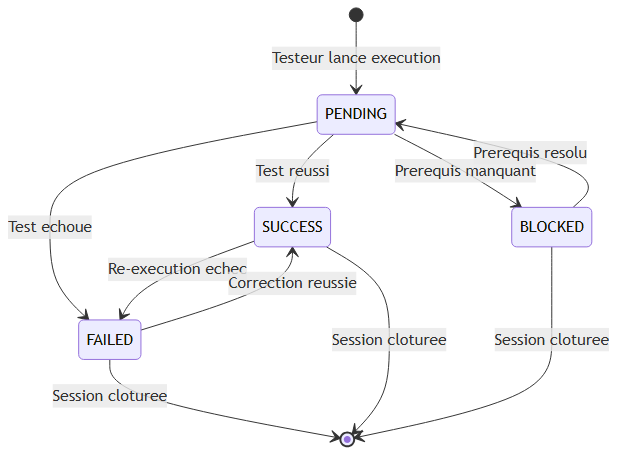
Le diagramme de composants (Figure 2-26) modelise l'architecture logicielle du systeme. Le frontend React (port 5173) comprend les composants IA (GenerateurCasTestModal, GraviteBadgeIA, SessionResumePanel), les pages par role et les services API Axios. Le backend Spring Boot (port 8081) inclut la couche Spring Security JWT, les controleurs REST (AuthController, ProjetController, ExecutionController, AnomalieController, AiController) et les services metier. Les services externes comprennent MySQL 8 pour la persistence, Cloudinary CDN pour les images et Ollama LLM (port 11434) pour l'intelligence artificielle.
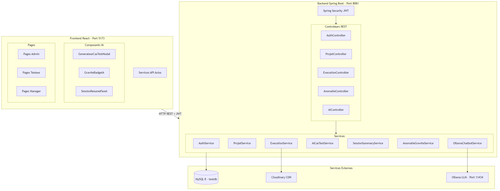
Le diagramme de deploiement (Figure 2-27) represente l'infrastructure physique du systeme. Le navigateur client communique avec le frontend React via HTTP (port 5173). Le frontend communique avec le backend Spring Boot via HTTP REST + JWT (port 8081). Le backend accede a la base MySQL via JDBC (port 3306), au serveur Ollama via HTTP (port 11434) et a Cloudinary via HTTPS. Tous les composants sont deployes sur une meme machine serveur, a l'exception de Cloudinary qui est un service cloud.
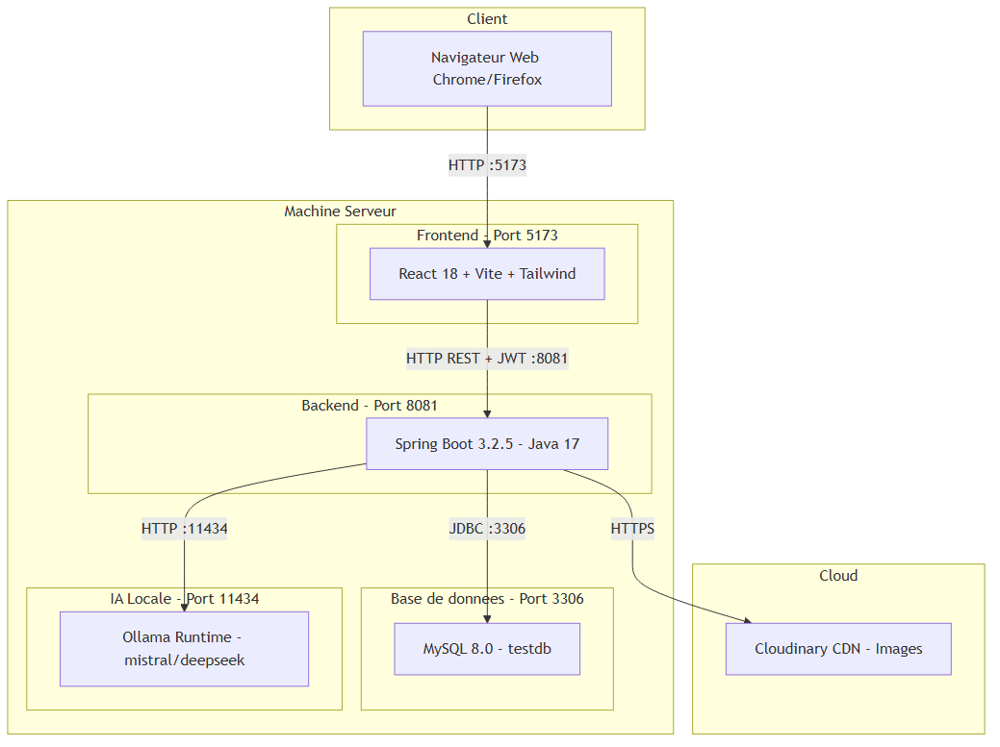
En resume, ce chapitre a etabli les besoins fonctionnels et non fonctionnels essentiels de l'application, tout en presentant son architecture a travers les diagrammes UML. Nous avons identifie trois acteurs principaux (Admin, Manager, Testeur) avec des permissions clairement differenciees, et modelise l'ensemble des interactions via 27 diagrammes UML couvrant les perspectives statique, dynamique et physique du systeme.
Les diagrammes de cas d'utilisation ont permis de formaliser les fonctionnalites accessibles par chaque role. Les diagrammes de sequence ont illustre les flux d'interaction pour les scenarios les plus critiques, incluant les trois fonctionnalites d'intelligence artificielle (generation de cas de test, resume de session, suggestion de gravite). Le diagramme de classes a modelise la structure de donnees avec la hierarchie d'heritage et les associations entre entites. Les diagrammes complementaires (activite, etats-transitions, composants, deploiement) ont complete la vision globale de l'architecture.
Cette synthese fournit une base solide pour le developpement et constitue le socle technique indispensable a la realisation de la plateforme Test Management Platform, presentee dans le chapitre suivant.